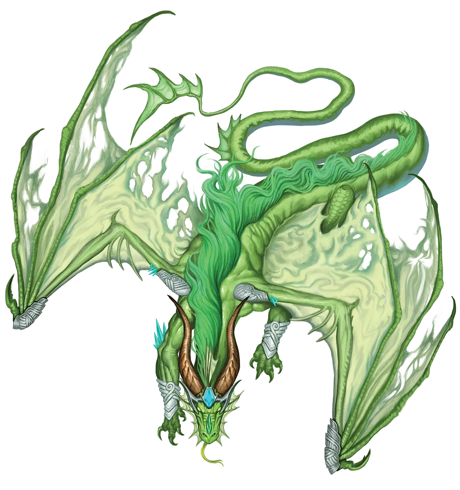
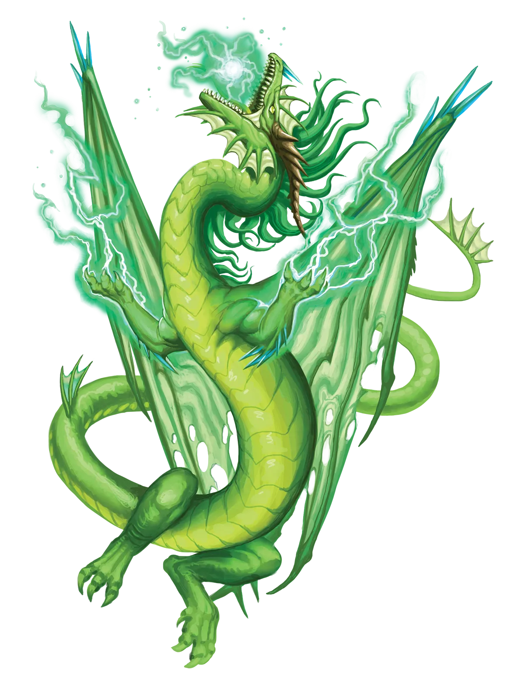

遁入以太
在大多数情况下，我都很欣赏以太龙的极端务实作风，但对某些人来说，这需要一些时间来适应。它们最具争议的做法之一，便是倾向于认为“审慎乃勇敢之本”，从一场必败的冲突中撤退，以便重整旗鼓、学习改进，日后若能取胜再卷土重来。我觉得这令人耳目一新，因为那些试图硬闯显然无望之事的人，落得什么下场都是咎由自取。但有些口口声声说着“荣誉”这类漂亮谎言的人，却认为以太龙的行为是胆小怯懦。不过，最好还是别让以太龙听到这种话。
以太龙 Etheric Dragon |
|
|
以太龙通常栖息于以太位面的遥远与隔绝之境，远离与物质位面交叠的区域。在那里，它们将极致的实用主义、务实精神与原始求生置于一切追求之上。鉴于以太位面的其他居民，包括劫掠的沙克尔，这是一种谨慎稳妥的做法。反过来，这也使得以太龙能够存活到足够强大，不再需要如此谨慎的地步，尽管到那时，这些教训早已深植于它们心中。实用主义与求生本能这两个相互竞争的目标，代表着一股朝向与背离“永恒之光仪式”的拉扯之力。 一方面，举行仪式或许能让巨龙在数周或数月内强大到足以抵御更多威胁，而这若靠自然成长，可能需要数十年甚至数百年。另一方面，仪式刚结束后的副作用会让以太龙感到前所未有的脆弱与警觉；这无异于暴露弱点，在自己最虚弱的时刻引颈就戮。一些以太龙通过识破“只有两条路”的谬误来解决这一矛盾：它们要么放弃仪式，寄望于在没有仪式的情况下存活数百年；要么前往一个更安全的穷乡僻壤，比如物质位面，在那里举行仪式，待到足够强大、能直面其威胁时才返回家园。这一策略在以太龙中取得了显著成功，因此，在物质位面上所见到的以太龙，大多数实际上已是永光龙。尽管传统派巨龙认定仪式对它们而言不切实际，但如果一只永光龙举行仪式、幸存下来并茁壮成长，那它显然选择了正确的道路，这一点值得尊重。但那是针对成功的巨龙而言。至于其他的，以太龙会毫不犹豫地嘲笑那些因鲁莽使用永恒之光仪式而陷入绝境、任人宰割的同类。不过，这么做的不只是传统派巨龙；永光以太龙也常常加入传统派同族的行列，将这种失败视为绝不可重蹈覆辙的教训。 在选择同伴时，以太龙极其务实。它们并不想要一个与自身个性或原则最契合的团队――它们想要一个最有可能存活的团队，仅此而已。通常，这意味着特别注重寻找能够保护和治疗的盟友，比如圣武士和牧师，但以太龙也知道，防御过重、攻势不足会让敌人有太多机会招致灾祸。既然生存至上，其余皆可灵活变通，以太龙一旦找到合适的团队，便会尽量不生事端。相反，它们努力融入并让自己变得不可或缺，以便团队愿意继续接纳它们，甚至会为他人的利益挺身而出，好让他人也能为龙这样做。 尽管如此，以太龙也无意为一桩注定失败的事业赴汤蹈火。如果战局已定，必须在与战友同死和独自逃生之间做出抉择，以太龙会选择后者，并在可行的情况下尽力协助其他幸存者一同逃脱。以太龙很适合谨慎、灵活且防御严密的职业，比如武僧，这能让它们有可能在败局中幸存并脱身。 遁入以太 在大多数情况下，我都很欣赏以太龙的极端务实作风，但对某些人来说，这需要一些时间来适应。它们最具争议的做法之一，便是倾向于认为“审慎乃勇敢之本”，从一场必败的冲突中撤退，以便重整旗鼓、学习改进，日后若能取胜再卷土重来。我觉得这令人耳目一新，因为那些试图硬闯显然无望之事的人，落得什么下场都是咎由自取。但有些口口声声说着“荣誉”这类漂亮谎言的人，却认为以太龙的行为是胆小怯懦。不过，最好还是别让以太龙听到这种话。 以太龙特质 Etheric Dragon Traits 你出身于一脉来自以太位面的务实生存主义者――以太龙世系。 |
  |